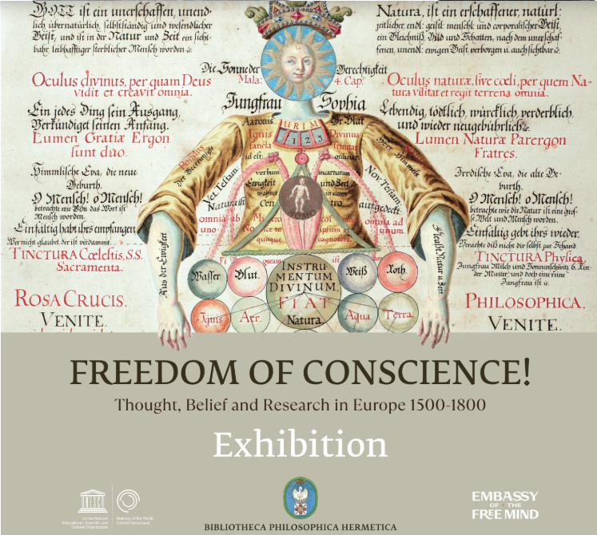
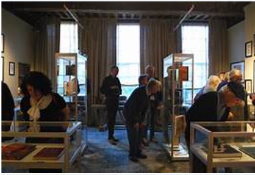
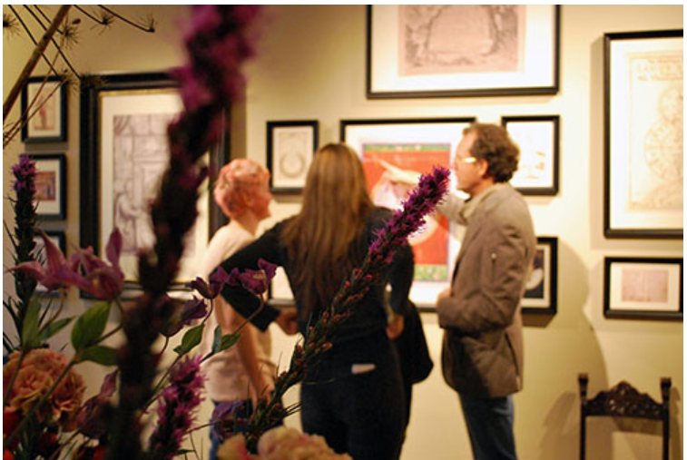
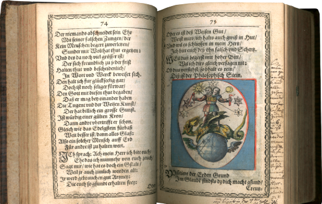

 TENTOONSTELLINGEN Stap binnen in onze tentoonstelling en ontdek de rijke erfenis van het vrije denken door eeuwenoude boeken, prenten en symbolische afbeeldingen maak je kennis met denkers en kunstenaars die de moed hadden hun eigen pad te volgen vaak tegen de stroom van hun tijd in. →
 PLAN JE BEZOEK Lees op deze pagina praktische informatie over onze openingstijden, tickets/prijzen, adres & route. →
 RONDLEIDINGEN Boek een rondleiding en kom meer te weten over de Embassy of the Free Mind en de collectie! →
 Ancient Wisdom Verken eeuwenoude manuscripten, symbolische kaarten en geheime kennis die de basis vormden voor vrij denken en spirituele ontdekkingen. →
Visual Philosophy Laat je inspireren door kunstwerken en illustraties die de verbinding tussen mens, natuur en kosmos verbeelden — het hart van de collectie. →
Lecture: The History of Free Thought Sluit je aan bij een inspirerende lezing over de impact van vrij denken door de eeuwen heen. →